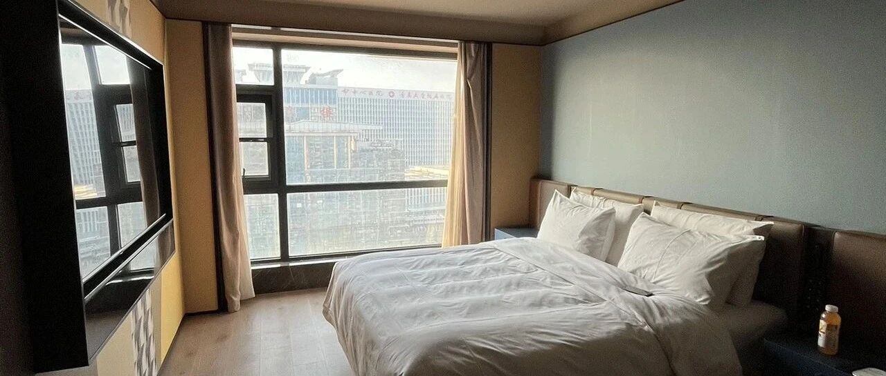

FIRE旅居生活开始！威海的房子定下来了
点击关注 秋秋在分享
一起实现财务自由退休
大家好，我是秋秋呀。
来威海已经一周了，旅居的房子定下来了！


我们已经住了几天了。
从看房到确定，从入住到适应，一切都比我想象的顺利。
我们现在是在这租了快半年，房租一个月1400，两室一厅。
5个月房租还不到我们当时北京一个月租金，幸福感拉满！
位置也很好，距离海边和大商场都不到2公里。
楼下就有儿童乐园，500米处还有好几个小超市和商业街。


每次出去玩，都能看到好多小朋友，太阳晒的暖暖的，风却是凉爽的，很有生活气息。


因为是旅居不打算添置太多东西，简简单单就挺好。
房间客厅能看到城区，主卧能看到海和湖。
对着这样的景色每天都很轻松，不敢想象在北京8000多一个月的房子外观看那可是破旧不堪，更别提景色了。


我家宝宝就也很开心，每天都是下楼玩沙子 玩滑梯 逛商场。
在北京的话很少有这种遛娃的地方，小孩有种跑不开的感觉。


所以来这些天，我感觉基础的吃喝玩乐感觉都差不多，完全不用担心。
像买菜做饭，京东淘宝网上价格一样。
北京菜价倒是也不贵，西红柿两三块一斤，威海没太大区别。
出去吃这边会便宜点，菜量感觉也更大，海鲜肯定多。
我们去吃了一家东北菜，四个人100多，吃不完四个菜。


而像星巴克 海底捞 喜茶 这些，也都有，基础生活这点绝对不用担心。
反而夜市多小摊多，食物比大城市还多样化一点。
区别最大的大概还是医疗和人文方面。
人文这里除了电影院，演唱会 音乐剧 话剧都比较少，北京的话见到明星还是很方便的。
更适合追星女孩。
相反，这里自然景观更好。
我家楼下是公园，再走远一点又是大公园，远点还有大海科技馆啥的，整个城市也特别干净，人少，让人心里很平静。
我俩有天出去散步，随处可见的健身区都被承包了。
根本不需要健身房办卡。

两个人像小孩一样荡了半天秋千，大老王说好久没这么轻松了。
若无闲事挂心头，便是人间好时节！
人生活在空气环境都好的地方，有足够的时间和空间锻炼，对于普通人真的不需要再去多花钱了。
医疗的话这次只带宝宝去社区打了一次预防针。
医护人员认真负责，小病感觉也方便，去诊所不用挂号排队检查，年轻人可能感受不到很大区别。
不能仅仅为了那一次的大病医疗而牺牲日常的身体健康定居在大城市，那就有点本末倒置了。
我们现在一天的安排是，上午运动看书，下午带娃各种出去玩，晚上早早休息。
相当于是爷爷奶奶交接班。
他们就住我们隔壁单元，换个电梯就到了，我们每天也会过去吃饭，一切都刚刚好。
来了这些天，感觉除了自己网上买了几个转运珠，生活开销加起来也没花到1000。

想起来叔本华说的，人自身拥有很多，对外在需要会变少。
就像不依赖进口的国家是幸运的，一个人内在充足、丰富也是幸运的。
健康的身体、良好的智力、愉快的性情、舒适的品格，本来就会让人幸福。
我们需要的不过就是给这些留有空间。
在空气好环境好的地方运动学习创作。
一家人团聚其乐融融，有时间陪伴孩子，孩子有地方玩，能在父母还健康的时候在身边。
钱重要，可是满足基础生活和医疗就好了。赚钱也要有个度量而不是永远都不足够的。
对于我们来说，每天每时都可以成为自己更重要。
一个内在丰富的人对于外在世界确实别无他求，除了这一特定性的礼物——闲暇。他需要闲暇去培养和发展自己的精神才能，享受自己的内在财富。
追求宁静和闲暇，过上一个安静、简朴和不受打扰的生活，要以简朴和节制换去以上。
威海是我们旅居的第一站，也是我们的范本了。
基础的生活便利度，医疗教育文人，环境和气候都要考虑的。
什么样的景色更有创作欲？
什么样的温度更舒适？
什么样的环境更让你感觉如鱼得水？
旅居的答案不是千篇一律的，每个季节每个阶段每个人都应该有自己不同的答案。
调查也显示，20-40的旅居者越来越多。

人生的答案从来就不是固定的。
希望秋秋的经历能为大家打开一个视角吧！
后面我会持续分享自己的旅居生活，记得关注。